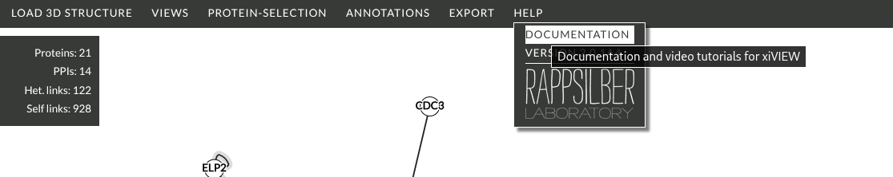

The following video demonstrates opening a 3D model using its four character PDB accession:
Warning
xiVIEW uses the NGL Viewer which does not support all .cif files. Specifically, it does not support models without atomic resolution, i.e. the coarse grained models used in CIF-IHM. These models can be viewed using the MolStar viewer at RCSB.
The following video demonstrates opening an AlphaFold structure for the selected protein:
Not part of xiVIEW, but as xiVIEW does not support the coarse grained CIF-IHM models we have provided a demonstration of how to view crosslinks on these models at RCSB:
More video tutorials are available here.
More detailed documentation for xiVIEW is available here and via the HELP menu of the xiVIEW network page:
